01
AIドラレコで、
事故を75%減らした。
危険をAIがリアルタイムに検知して警告し、運転のクセを数値でフィードバック。導入前を100とすると、事故はわずか25に。ドライバーを叱るためではなく、守るための仕組みです。
75%事故削減（導入前後の比較）
車両の約1/3に導入・順次拡大中
車両の約1/3に導入・順次拡大中
走り続ける、信頼のために。
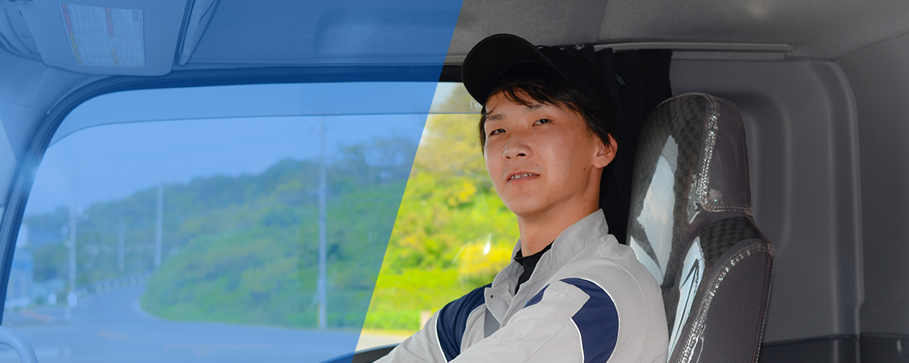
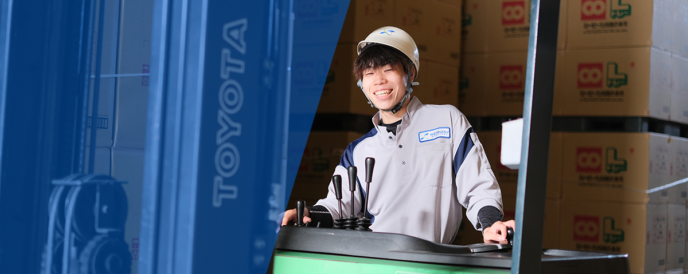
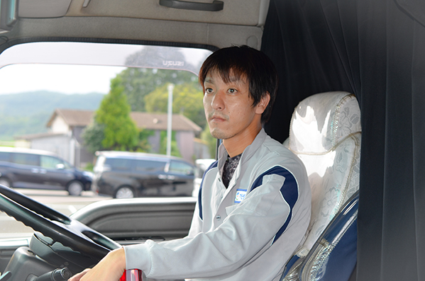
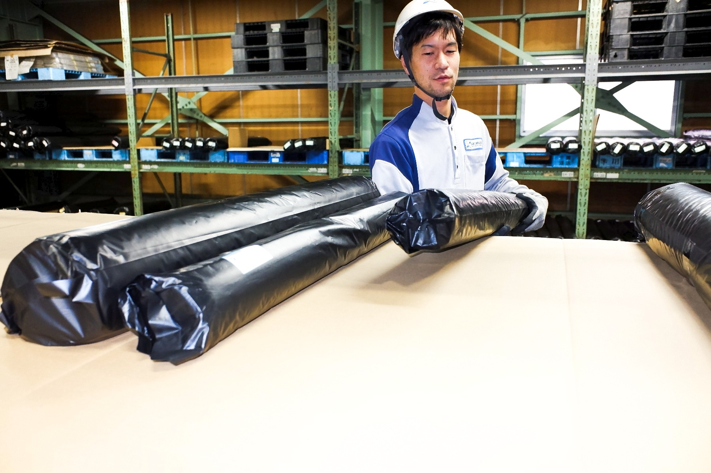
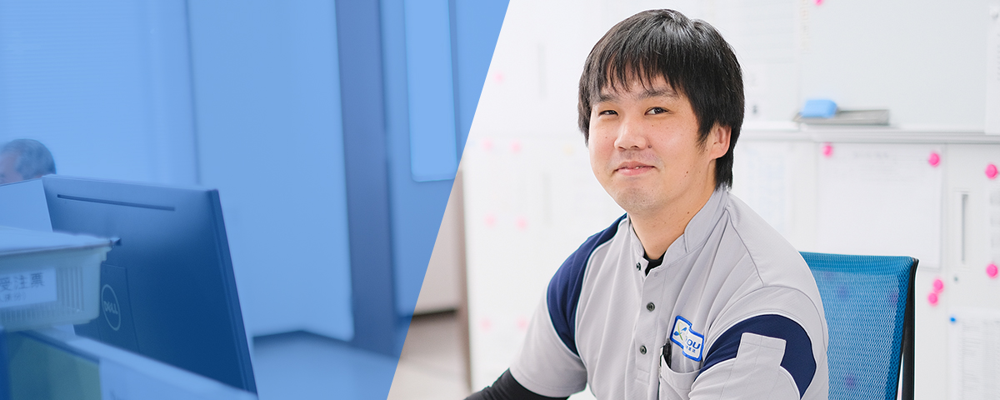
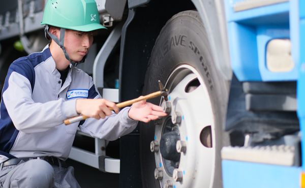
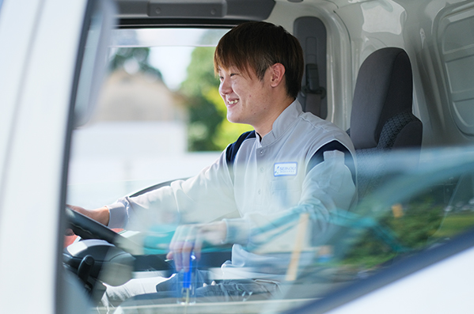
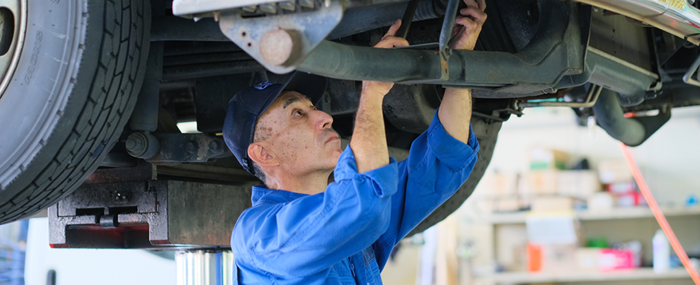
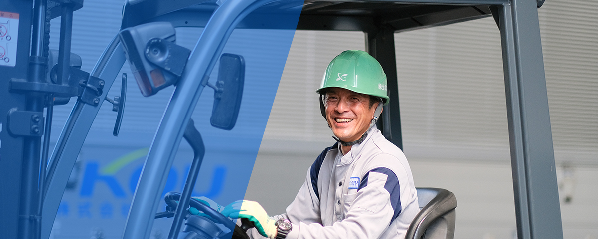
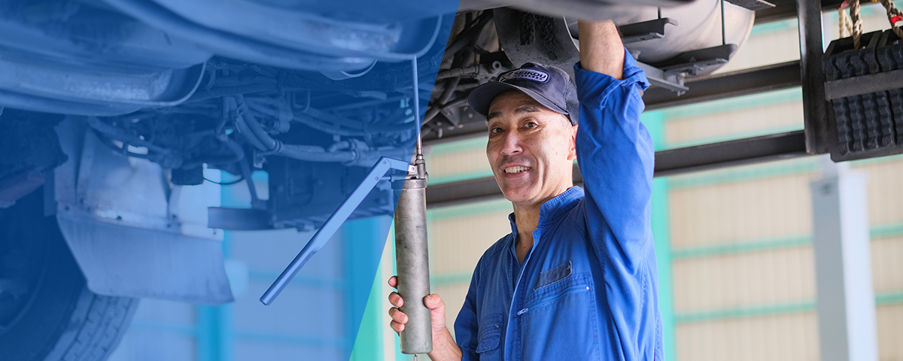
岡山から、運びつづけて60年。
私たちが運んでいるのは、荷物であり、荷主さまの事業であり、その先にある暮らしです。
だから、安全を仕組みにする。だから、働く仲間を守る。
止めない物流が、地域の「あたりまえ」を支えている。
WHO WE ARE
はじめに知る、生興運送
1964年、岡山県井原市で創業。輸配送・倉庫管理・自動車整備の3事業をひとつの会社で担い、荷主さまの物流をまるごとお引き受けしています。走るのは荷物ですが、運んでいるのは信頼です。
SAFETY IS SCIENCE
安全を、科学する。
感覚ではなく、データで。生興運送はAIとテクノロジーで安全と品質を追求し、荷主さまの信頼と、働く仲間の安心に変えています。
危険をAIがリアルタイムに検知して警告し、運転のクセを数値でフィードバック。導入前を100とすると、事故はわずか25に。ドライバーを叱るためではなく、守るための仕組みです。
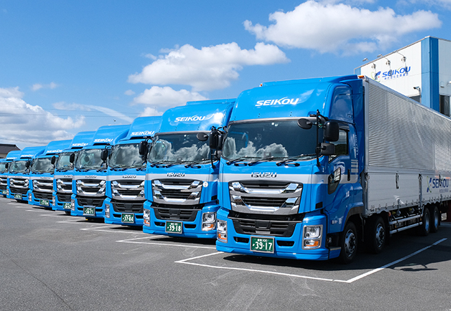
不穏を感じたら、上長の許可を待たず車を止めていい。体調異変にはすぐ代替便を。荷主さまへは会社から説明する。「守られている」という安心が、長く働ける理由になっています。
車両整備を自社で行うから、コンディションを常に把握。「大事に荷物を運ぶ」を車両の状態管理から支えます。輸配送・倉庫・整備の三位一体が、生興運送の総合力です。
FIND YOUR WAY
「荷物」から、「相談内容」から。
事業名からではなく、運びたいモノや、相談したいことから。いちばん近いサービスと、24時間受付の窓口へご案内します。
Needs
目的・課題から選ぶ
TOTAL LOGISTICS
三位一体の、総合物流。
OKAYAMA TO KANTO
岡山を起点に、関東・広島へ。
本社（岡山・井原）／福山営業所／広島／関東拠点（群馬・板倉町）の4拠点をつないで運行しています。記載以外のエリアもご相談ください。
Okayama
本社（岡山・井原）
配車・整備工場・物流センターを備えた中心拠点。ここから全方面へ運行します。
HEAD OFFICEFukuyama
福山営業所
備後圏の地場配送・中距離輸送。本社と近接し、便の組み合わせが柔軟です。
BINGO AREAHiroshima
広島
広島方面の輸送・保管に対応。山陽エリアをカバーします。
SANYO AREAKanto
関東拠点（群馬・板倉町）
2024年開設の自社倉庫。岡山からの長距離輸送と保管をワンストップで。
SINCE 2024 ／ OWN WAREHOUSEDRIVE WITH US
人が、いちばんの財産です。
社員・仕事・教育・入社後の姿まで、ぜんぶ見せます。大型ドライバー、整備士、倉庫・物流センター、運行管理まで幅広く募集中。「守られている」から、長く働ける会社です。
LET'S TALK
新規のお取引も、ご応募も。24時間受付でお待ちしています。
「運べるかどうか」からのご相談も歓迎です。
0866-65-0112受付時間 8:30〜17:30（土日祝を除く）／FAX 0866-65-0113／配車 0866-65-0198